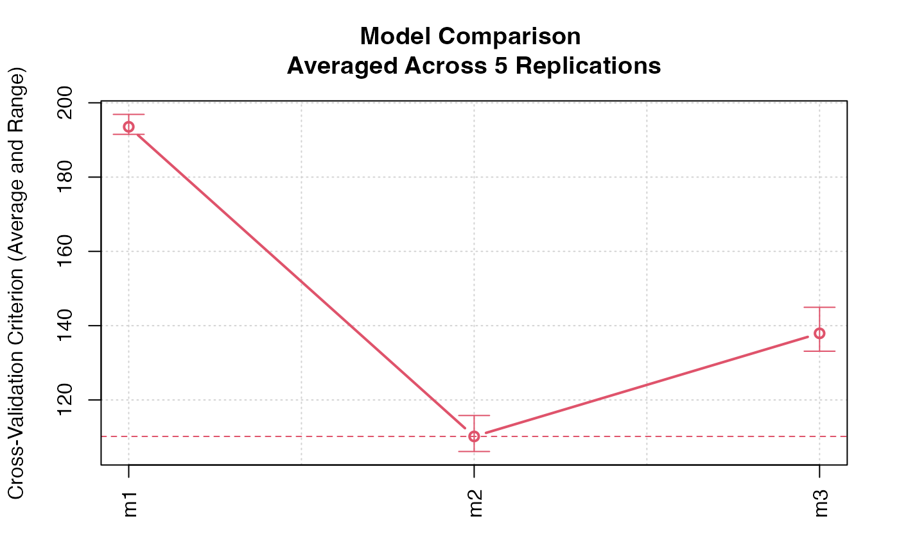
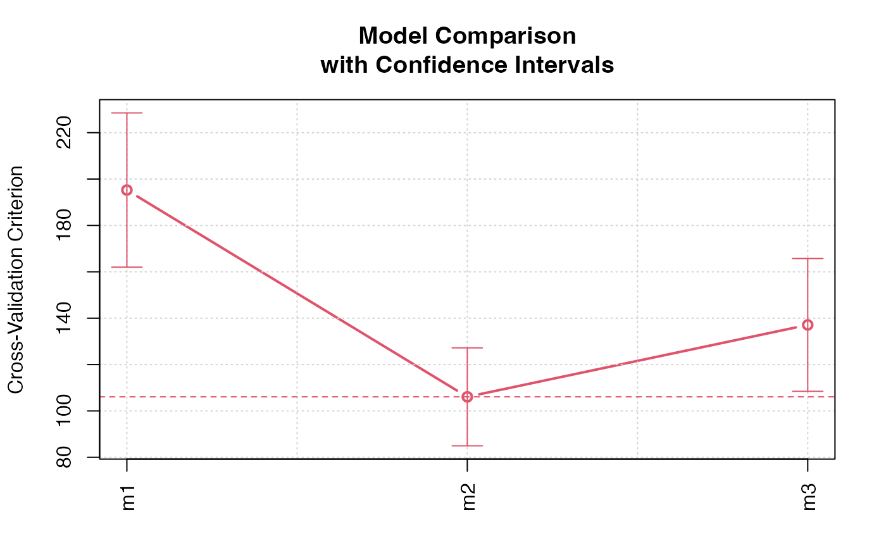

A cv() method for an object of class "modlist",
created by the models() function. This cv() method simplifies
the process of cross-validating several models on the same set of CV folds
and may also be used for recursive CV, where CV is used to select one from among
several models. models() performs some
"sanity" checks, warning if the models are of different classes, and
reporting an error if they are fit to apparently different data sets or
different response variables.
Usage
# S3 method for modList
cv(
model,
data,
criterion = mse,
k,
reps = 1,
seed,
quietly = TRUE,
recursive = FALSE,
...
)
models(...)
# S3 method for cvModList
print(x, ...)
# S3 method for cvModList
plot(
x,
y,
spread = c("range", "sd"),
confint = TRUE,
xlab = "",
ylab,
main,
axis.args = list(labels = names(x), las = 3L),
col = palette()[2L],
lwd = 2,
grid = TRUE,
...
)
# S3 method for cvModList
as.data.frame(x, row.names = NULL, optional = TRUE, ...)Arguments
- model
a list of regression model objects, created by
models().- data
(required) the data set to which the models were fit.
- criterion
the CV criterion ("cost" or lack-of-fit) function, defaults to
mse.- k
the number of CV folds; may be omitted, in which case the value will depend on the default for the
cv()method invoked for the individual models.- reps
number of replications of CV for each model (default is 1).
- seed
(optional) seed for R's pseudo-random-number generator, to be used to create the same set of CV folds for all of the models; if omitted, a seed will be randomly generated and saved. Not used for leave-one-out CV.
- quietly
if
TRUE(the default), simple messages (for example about the value to which the random-number generator seed is set), but not warnings or errors, are suppressed.- recursive
if
TRUE(the default isFALSE), cross-validation is performed recursively to select a "best" model deleting each fold in turn by calculating the CV estimate of the criterion for the remaining folds; this is equivalent to employing theselectModelList()model-selection procedure.- ...
for
cv.modList(), additional arguments to be passed to thecv()method applied to each model.For
models(), two or more competing models fit to the the same data; the several models may be named.For the
print()method, arguments to be passed to theprint()method for the individual model cross-validations.For the
plot()method, arguments to be passed to the baseplot()function.- x
an object of class
"cvModList"to be printed or plotted.- y
the name of the element in each
"cv"object to be plotted; defaults to"adj CV crit", if it exists, or to"CV crit".- spread
if
"range", the default, show the range of CV criteria for each model along with their average; if"sd", show the average plus or minus 1 standard deviation.- confint
if
TRUE(the default) and if confidence intervals are in any of the"cv"objects, then plot the confidence intervals around the CV criteria.- xlab
label for the x-axis (defaults to blank).
- ylab
label for the y-axis (if missing, a label is constructed).
- main
main title for the graph (if missing, a label is constructed).
- axis.args
a list of arguments for the
axis()function, used to draw the horizontal axis. In addition to the axis arguments given explicitly,side=1(the horizontal axis) andat=seq(along=x)(i.e., 1 to the number of models) are used and can't be modified.- col
color for the line and points, defaults to the second element of the color palette; see
palette().- lwd
line width for the line (defaults to 2).
- grid
if
TRUE(the default), include grid lines on the graph.- row.names
optional row names for the result, defaults to
NULL.- optional
to match the
as.data.frame()generic function; ifFALSE(the default isTRUE), then the names of the columns of the returned data frame, including the names of coefficients, are coerced to syntactically correct names.
Value
models() returns a "modList" object, the
cv() method for which returns a "cvModList" object,
or, when recursive=TRUE, an object of class c("cvSelect", "cv").
Functions
cv(modList):cv()method for"modList"objects.models(): create a list of models.print(cvModList):print()method for"cvModList"objects.plot(cvModList):plot()method for"cvModList"objects.as.data.frame(cvModList):as.data.frame()method for"cvModList"objects.
Examples
data("Duncan", package="carData")
m1 <- lm(prestige ~ income + education, data=Duncan)
m2 <- lm(prestige ~ income + education + type, data=Duncan)
m3 <- lm(prestige ~ (income + education)*type, data=Duncan)
(cv.models <- cv(models(m1=m1, m2=m2, m3=m3),
data=Duncan, seed=7949, reps=5))
#>
#> Model m1 averaged across 5 replications (with SDs):
#> 10-Fold Cross Validation
#> method: Woodbury
#> cross-validation criterion = 195.0866 (2.307011)
#> bias-adjusted cross-validation criterion = 193.5434 (2.195082)
#> full-sample criterion = 166.8155
#>
#> Model m2 averaged across 5 replications (with SDs):
#> 10-Fold Cross Validation
#> method: Woodbury
#> cross-validation criterion = 111.7281 (4.908514)
#> bias-adjusted cross-validation criterion = 110.1813 (4.623137)
#> full-sample criterion = 84.39899
#>
#> Model m3 averaged across 5 replications (with SDs):
#> 10-Fold Cross Validation
#> method: Woodbury
#> cross-validation criterion = 142.3619 (5.682756)
#> bias-adjusted cross-validation criterion = 137.932 (5.264929)
#> full-sample criterion = 74.45878
D.cv.models <- as.data.frame(cv.models)
head(D.cv.models)
#> model rep fold criterion adjusted.criterion full.criterion coef.Intercept
#> 1 m1 1 0 198.534 196.89 166.82 -6.0647
#> 2 m1 1 1 139.227 NA NA -5.3264
#> 3 m1 1 2 328.311 NA NA -7.4825
#> 4 m1 1 3 87.649 NA NA -5.1543
#> 5 m1 1 4 133.564 NA NA -5.9934
#> 6 m1 1 5 55.317 NA NA -5.4389
#> coef.income coef.education coef.typeprof coef.typewc coef.income:typeprof
#> 1 0.59873 0.54583 NA NA NA
#> 2 0.57458 0.55107 NA NA NA
#> 3 0.53963 0.59419 NA NA NA
#> 4 0.60090 0.53586 NA NA NA
#> 5 0.54033 0.59515 NA NA NA
#> 6 0.57504 0.54903 NA NA NA
#> coef.income:typewc coef.education:typeprof coef.education:typewc
#> 1 NA NA NA
#> 2 NA NA NA
#> 3 NA NA NA
#> 4 NA NA NA
#> 5 NA NA NA
#> 6 NA NA NA
summary(D.cv.models, criterion ~ model + rep, include="folds")
#> rep
#> model 1 2 3 4 5
#> m1 204.7489 197.8415 192.9138 199.5759 200.2259
#> m2 110.5324 109.8870 121.7147 111.1913 120.0575
#> m3 141.9428 145.7092 143.0177 143.1847 155.0245
plot(cv.models)

(cv.models.ci <- cv(models(m1=m1, m2=m2, m3=m3),
data=Duncan, seed=5962, confint=TRUE, level=0.50))
#>
#> Model m1:
#> 10-Fold Cross Validation
#> method: Woodbury
#> cross-validation criterion = 196.953
#> bias-adjusted cross-validation criterion = 195.2606
#> 50% CI for bias-adjusted CV criterion = (162.0119, 228.5093)
#> full-sample criterion = 166.8155
#>
#> Model m2:
#> 10-Fold Cross Validation
#> method: Woodbury
#> cross-validation criterion = 107.3751
#> bias-adjusted cross-validation criterion = 106.081
#> 50% CI for bias-adjusted CV criterion = (84.96181, 127.2003)
#> full-sample criterion = 84.39899
#>
#> Model m3:
#> 10-Fold Cross Validation
#> method: Woodbury
#> cross-validation criterion = 141.2562
#> bias-adjusted cross-validation criterion = 137.0925
#> 50% CI for bias-adjusted CV criterion = (108.4551, 165.7299)
#> full-sample criterion = 74.45878
# nb: n too small for accurate CIs
plot(cv.models.ci)

(cv.models.recursive <- cv(models(m1=m1, m2=m2, m3=m3),
data=Duncan, seed=5962,
recursive=TRUE, save.model=TRUE))
#> R RNG seed set to 5962
#> 10-Fold Cross Validation
#> cross-validation criterion = 107.3751
#> bias-adjusted cross-validation criterion = 135.4726
#> full-sample criterion = 113.7905
cv.models.recursive$selected.model
#>
#> Call:
#> lm(formula = prestige ~ income + education + type, data = Duncan)
#>
#> Coefficients:
#> (Intercept) income education typeprof typewc
#> -0.1850 0.5975 0.3453 16.6575 -14.6611
#>